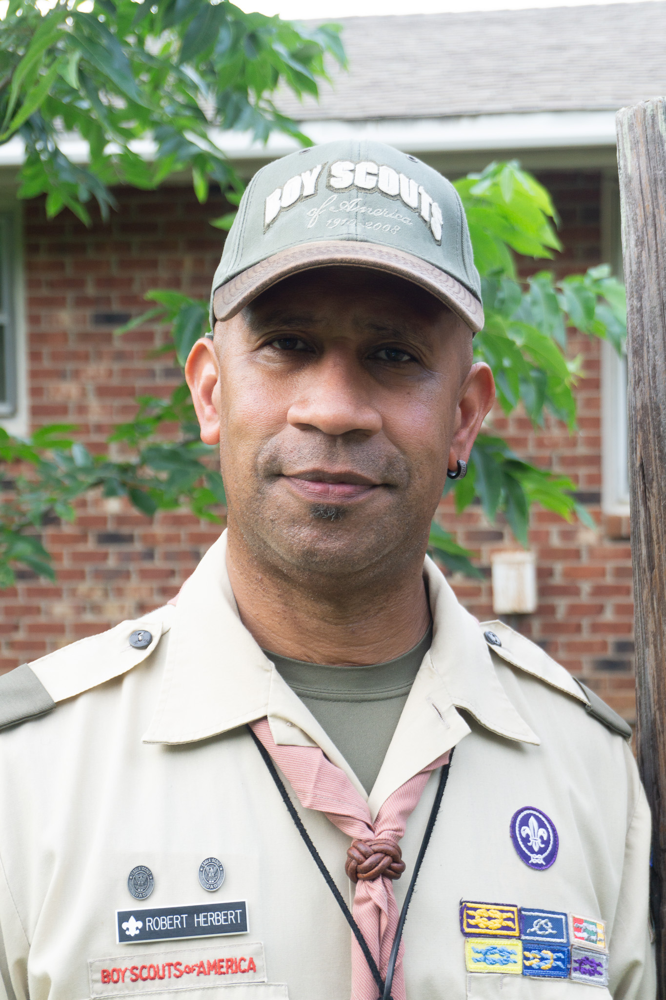
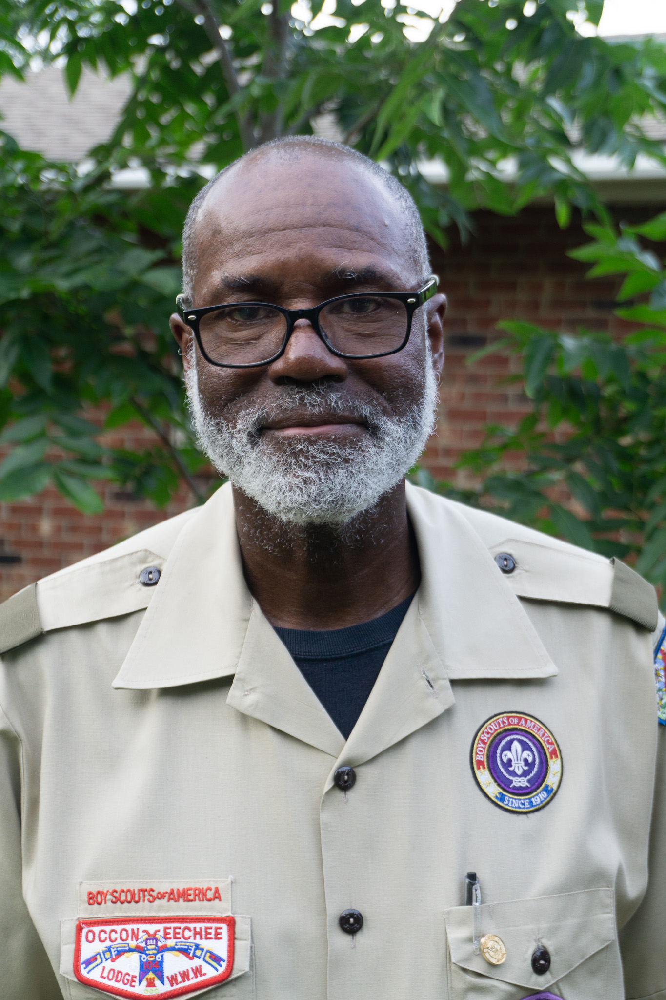

Troop Leadership
Assistant Scoutmaster

Jonathan Winstead
Jonathan Winstead has been involved with scouting for several years. He has served as a parent coordinator for Cub Pack 253 when his son Jonathan was progressing through the Webelos and Arrow Of Light ranks. He is now serving as an Assistant Scoutmaster for Troop 253 where his son is actively involved as a Life Scout. He has completed several advanced Boy Scout leader training courses, the most notable being “Woodbadge” during the 100 year celebration, S7-421-19-1 as a "Buffalo". Jonathan is active as a Science, Technology, Engineering, and Math tutor and mentor. He has been involved with numerous volunteer organizations such as Habitat For Humanity, Brown Bag Ministry, and Toys for Tots to name a few. Jonathan is to proud to support the next generation of leaders by teaching and exhibiting the Scouting Oath and Law.
- Youth Protection Training Certification
- Introduction to Outdoor Leadership Skills (IOLS)
- Aims and Methods of Scouts BSA
- Ideals and Beliefs of Scouts BSA
- Introduction to Merit Badges
- Merit Badge Counselors for Boy Scouting
- Troop Meeting for Scouts BSA
- Troop Committee Meetings for Scouts BSA
- Advancement for Scouts BSA
- Roles of Scoutmaster and SPL for Scouts BSA
- Role of the Unit Key 3 for Scouts BSA
- BALOO Introduction Course
- Outdoor Ethics for Scouts BSA
Assistant Scoutmaster
Robert C Herbert Jr
- Youth Protection Training
- Roles of Scoutmaster and SPL for Scouts BSA
- Wood Badge
- Leave No Trace Trainer
- Outdoor Leadership
- Scoutmaster Fundamentals
- Outdoor Ethics for Scouts BSA
- BALOO Intro Trng
- Intro to Cub Scout Outdoor Training
- Hazardous Weather Training
Assistant Scoutmaster

Shawn E. Shearin
A native of Richmond Virginia, Shawn was introduced to scouting by his parents as a fun and unique activity to give him exposure to all that Scouting had to offer. Fast forward years later and Pack 253 / Troop 253 would offer his own sons access to that same amazing world. First as a Pack Parent, then a Dean Leader, Assistant Cubmaster to now an Assistant Scoutmaster, he’s witnessed over his almost decade career as an Adult Leader the positive effect that Scouting, but in particular the entire “Village of 253” - every volunteer & adult leader, has had on countless young people that have come through the program
- Youth Protection Training Certification
- BALOO Introduction Course
- Outdoor Ethics
- Hazardous Weather Training
- Journey to Excellence
- Annual Troop Program Planning
- Introduction to Merit Badges
- Aims and Methods of Scouts BSA
Life-to-Eagle Coordinator; Committee Member,
Eagle Coach

Masceo DesChamps
: My experience in scouting spans over 20 years starting with Cub Scouts in the late 1990's and transitioning to Boy Scouts in 2000. I served as Troop Committee Chair and an Assistant Scoutmaster for over ten years and currently serves as the Life-to Eagle Coordinator, Eagle Coach, and Troop Committee Member. I am a member of Watts Chapel Missionary Baptist Church, retired, and continue to support Troop 253. I currently reside in Raleigh, home town in South Carolina, and graduated from the University of South Carolina Business School.
- Youth Protection Training Certification
- BALOO Introduction Course
- Outdoor Ethics
- Hazardous Weather Training
- Journey to Excellence
- Annual Troop Program Planning
- Introduction to Merit Badges
- Aims and Methods of Scouts BSA
Troop Committee Member
Allen Akins
- Outdoor Leadership Training.
- Scoutmaster Fundamentals
- Distinguished Leadership Citation
- NLE Leadership Training
- Outdoors Programs for Boy Scouting course
- Drive Safely Course Training
- Outdoors Ethics for Boy Scouting Course
- BALOO Introduction Course
- Exploring Ride-Along Safety Training
- Troop Meeting for Boy Scouting Course
- Planning Your Cub Scout Outdoors Event Course.
- Program Planning for your Event Course
- Hazardous Weather Training
- Journey to Excellence
- Benefits of the Outdoors Program Course
- Introduction to Cub Scout Outdoor Program Course
- Annual Troop Program Planning
- Aims and Methods of Scouts BSA
Troop 253 Committee Chair
Chris Nelson
Adult Scouter serving for over a decade with both Troop and Pack 253 in multiple leadership roles.
- Youth Protection Training
- Wood Badge Recipient
- IOLS Trained
- Training/Trainer
- Journey to Excellence Trained
- Hazardous Weather Trained